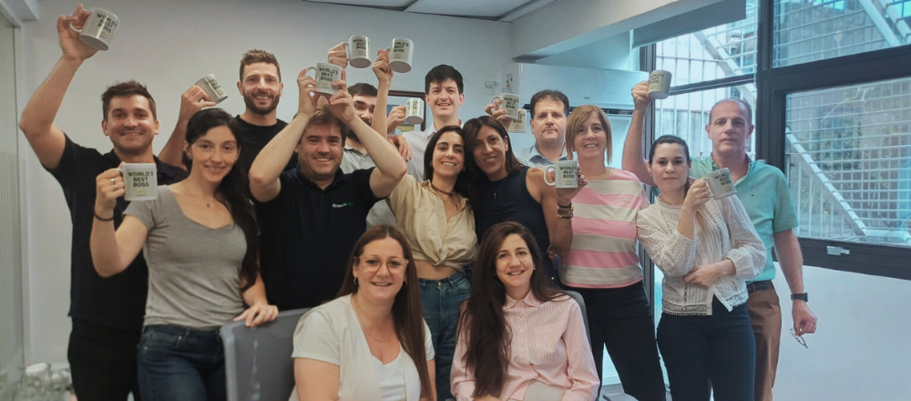

Transformación Liderazgos Humanos (Método Kind)
Programa en tres módulos progresivos — Individuo, Equipo y Organización — para formar líderes que gestionen desde lo humano. Incluye herramientas propias como el Mapa Humano, cuadrantes de liderazgo, perfiles generacionales y liderazgo 1 a 1.
Ideal para organizaciones con líderes técnicos que necesitan desarrollar habilidades humanas, o equipos con alta rotación y mala salud mental.
Ver programa completo
Módulo 1 — Individuo
"Conócete a ti mismo"
- Registro emocional y autoconocimiento profundo
- Manejo del estrés y las emociones bajo presión
- Habilidades humanas: empatía, escucha activa, inteligencia emocional
- Rueda de emociones, identificación de sesgos y filtros
- Comunicación efectiva y autoevaluación constructiva
- Multitasking vs. atención plena
Módulo 2 — Equipo
"Conoce a tu equipo y aprende a gestionarlo"
- Identificación de fortalezas, debilidades y motivaciones de cada miembro
- Gestión de diversidad generacional (Boomers, X, Millennials, GenZ)
- Estilos de liderazgo por cuadrantes cerebrales
- Herramienta propia: el Mapa Humano (cuadrante natural, secundario, generación, tareas, motivación, desgaste)
- Comunicación efectiva y resolución de conflictos
Módulo 3 — Organización
"Crea ambientes positivos y productivos"
- Seguridad psicológica en el equipo
- Bienestar emocional y estrategias de apoyo
- Productividad en equilibrio con salud mental
- Autonomía y liderazgo 1 a 1